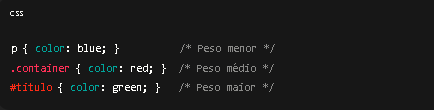
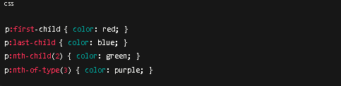
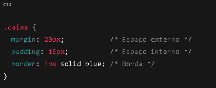
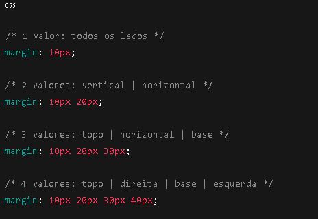
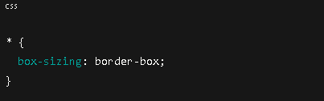

Regra da cascata:
A cascata define qual estilo do site pela ordem e peso do elemento.
Especificidade:
A Especificidade define qual seletor tem mais prioridade
Exemplo:
Combinações De Seletores:
- Espaço → Seleciona elementos dentro de outro
- Filho direto (>) → Seleciona elementos que são filhos imediatos
- Adjacente (+) → Seleciona o elemento irmão logo após
Pseudo-classes:
- first-child → Seleciona o primeiro filho de um elemento.
- last-child → Seleciona o último filho.
- last-child → Seleciona o último filho.
- nth-of-type(n) → Seleciona o nº elemento do mesmo tipo dentro do pai.
Exemplo:
Display Inline x Block
Ocupa 100% da largura.
Aceita "width,height,margin,padding"
Ex.: span,a,strong
Inline:
Ocupa apenas o tamando do conteúdo.
Não aceita widht,height
margin, padding só funcionam horizontalmente
Elementos Inline e Block
Inline : span,a,img,strong,em
Block : div,section,p,h1-h6.
Margin,Padding e Border
- Margin → espaço externo.
- Padding → espaço interno.
- Border → borda do elemento.
Shorthand (atalhos) :
- 1 valor → todos os lados.
- 2 valores → vertical | horizontal.
- 3 valores → opo | horizontal | base.
- 4 valores → topo | direita | base | esquerda.
Margin,Padding e Border
Shorthands
Box-sizing : border-box
inclui padding e border no cálculo de widht,height
Facilita o controle do tamanha do elemento.
